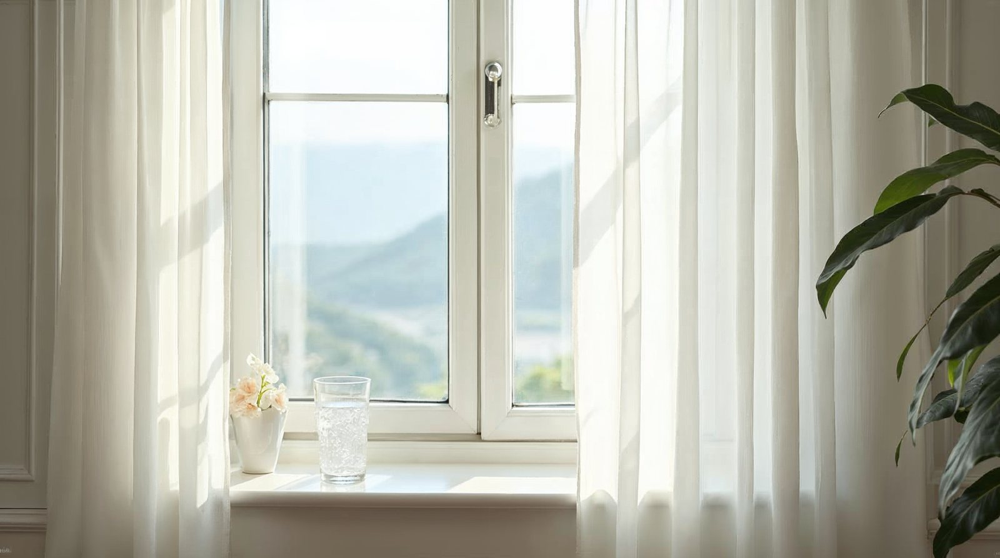
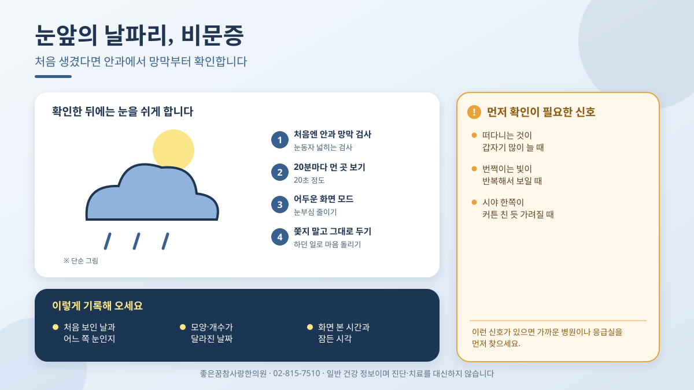

이종호 한의사 감수좋은꿈참사랑한의원 대표원장 (한의사 면허번호 19769)발행 2026-11-26 · 수정 2026-11-27
이 글의 차례
맑은 날 하늘을 올려다보는데 눈앞에 작은 점 몇 개가 둥둥 떠다녀요. 손으로 쫓아 보려 해도 시선을 따라 함께 움직이고, 눈을 돌리면 살짝 늦게 따라옵니다. 흰 모니터 화면을 볼 때는 실오라기 같은 게 스르륵 지나가고요. 처음엔 날파리인 줄 알았는데, 아무리 봐도 날파리는 없습니다.
이렇게 눈앞에 무언가 떠다니는 것처럼 보이는 걸 비문증이라고 불러요. 날파리증이라고도 하죠. 생각보다 많은 분이 겪고, 대부분은 눈 속의 자연스러운 변화에서 생겨요. 그래도 처음 생겼을 때는 안과에서 한 번 자세히 확인하는 게 중요합니다.
진료실에서 비문증을 말씀하시는 분들은 대개 두 가지로 힘들어하세요. 혹시 눈에 큰 문제가 생긴 건 아닐까 하는 걱정, 그리고 자꾸 신경이 쓰여 집중이 안 되는 불편이요. 이 둘은 다른 얘기라서 따로 풀어야 해요. 걱정은 안과 확인으로, 불편은 눈을 쉬게 하는 생활로요.
비문증은 눈에 보이는 거라 외면하기가 어려워요. 한번 의식하기 시작하면 책을 읽을 때도, 길을 걸을 때도 자꾸 그 점을 쫓게 되거든요. 걱정이 클수록 더 잘 보이는 것 같은 느낌도 들고요.
이 글에서는 비문증이 왜 생기는지, 무엇을 먼저 확인해야 하는지, 그리고 떠다니는 것과 함께 지내는 법을 정리했어요. 정확한 확인과 함께 마음을 조금 내려놓는 과정도 중요하거든요.
비문증이 있다고 해서 눈을 덜 써야 하는 것은 아닙니다. 책을 읽고 화면을 보는 일상은 그대로 이어 가셔도 됩니다. 다만 눈이 지치지 않도록 쉬는 틈을 만들어 주는 것, 그리고 변화가 생겼을 때 알아차리는 것, 이 두 가지를 기억해 두시면 됩니다.
비문증은 어떤 모양으로 보이나요
떠다니는 것의 모양은 사람마다 다양합니다. 어떤 모양에 가까운지 기억해 두시면 안과와 한의원 진료에서 모두 도움이 됩니다.
- 작은 점이나 동그라미 몇 개
- 실오라기나 지렁이처럼 길쭉한 것
- 거미줄이나 그물 같은 것
- 투명한 고리나 링 모양
- 날파리나 먼지가 날아다니는 듯한 것
이런 것들은 밝고 단조로운 배경, 예를 들어 맑은 하늘이나 흰 벽, 흰 화면을 볼 때 잘 보입니다. 시선을 움직이면 함께 움직이고, 눈을 멈추면 천천히 가라앉듯 떠다니는 것이 특징입니다.
왜 눈앞에 무언가 떠다닐까요
눈 안쪽은 유리체라는 투명한 젤 같은 물질로 채워져 있습니다. 어릴 때는 이 젤이 맑고 고르지만, 나이가 들면서 조금씩 물처럼 묽어지고 안에 있는 섬유들이 뭉치기 시작합니다. 이렇게 뭉친 섬유나 작은 덩어리가 망막에 그림자를 드리우면 눈앞에 무언가 떠다니는 것처럼 보입니다.
나이가 들며 유리체가 망막에서 떨어져 나가는 일도 흔히 생깁니다. 이것을 후유리체 박리라고 부르는데, 이때 갑자기 떠다니는 것이 늘거나 고리 모양의 그림자가 보이기도 합니다. 대부분은 자연스러운 변화지만, 떨어지는 과정에서 망막이 당겨져 찢어질 수 있어 안과 확인이 필요합니다.
근시가 심한 분은 눈의 길이가 길어 유리체 변화가 더 이른 시기에 생기기도 합니다. 눈 수술을 받았거나 눈을 부딪친 적이 있는 분, 눈 안에 염증이 있었던 분도 비문증이 생길 수 있습니다.
비문증은 언제 안과에서 먼저 확인해야 하나요
비문증이 처음 생겼다면 안과에서 눈동자를 넓히는 안약을 넣고 망막을 자세히 보는 검사를 받아 보시길 권합니다. 대부분은 걱정할 문제가 아니라는 말을 듣지만, 드물게 망막이 찢어지거나 떨어진 것이 함께 발견되기도 하기 때문입니다.
이미 검사를 받고 괜찮다는 말을 들었더라도, 떠다니는 것이 갑자기 크게 늘거나, 번쩍이는 빛이 새로 보이거나, 시야 한쪽이 가려지는 느낌이 생긴다면 다시 확인을 받으셔야 합니다. 이 부분은 아래 '먼저 확인이 필요한' 신호에 정리해 두었습니다.
검사 뒤 눈동자를 넓힌 약 때문에 몇 시간 동안 눈이 부시고 가까운 글씨가 잘 안 보일 수 있습니다. 검사하는 날은 운전을 피하시고 선글라스를 챙겨 가시면 편합니다.
검사 결과를 들을 때는 어느 쪽 눈에 어떤 변화가 있는지, 다음 검사는 언제 받으면 되는지를 메모해 두세요. 한의원에 오실 때도 그 내용을 알려 주시면 진료 방향을 정하는 데 큰 도움이 됩니다.
눈의 피로나 안구건조와는 어떻게 다른가요
눈이 피로하면 화면이 뿌옇게 보이거나 초점이 잘 맞지 않는 느낌이 들 수 있습니다. 이런 흐림은 눈을 깜빡이거나 잠시 쉬면 나아지는 경우가 많습니다. 반면 비문증은 깜빡여도 그대로 남아 시선을 따라다니는 것이 다릅니다.
안구건조가 있으면 눈물막이 고르지 않아 시야가 잠깐씩 뿌옇게 흐려지기도 합니다. 눈이 뻑뻑하고 모래가 들어간 듯한 느낌이 함께 있다면 안구건조를 먼저 생각해 봅니다. 비문증과 눈의 피로, 안구건조가 함께 있는 분도 많아서 진료실에서는 나눠서 여쭙습니다.

비문증에 대해 자주 헷갈리는 것
첫째, 비문증이 생기면 시력이 점점 나빠진다는 생각입니다. 대부분의 비문증은 시력 자체와는 관계가 없습니다. 떠다니는 것이 보여도 글씨가 잘 보이고 시야가 가려지지 않는다면 시력이 떨어지고 있다는 뜻은 아닙니다.
둘째, 눈에 좋은 영양제를 먹으면 떠다니는 것이 사라진다는 생각입니다. 유리체 안에 생긴 그림자를 녹여 없애는 먹는 방법은 알려진 것이 없습니다. 눈의 피로를 덜고 몸을 회복시키는 생활이 오히려 현실적인 도움이 됩니다.
셋째, 한 번 검사를 받았으니 다시는 안 받아도 된다는 생각입니다. 처음 검사에서 괜찮았더라도 앞에서 말씀드린 변화가 생기면 그때는 다시 확인을 받아야 합니다.
계절과 생활에 따라 더 잘 보이는 때
비문증은 밝은 배경에서 잘 보입니다. 그래서 하늘이 맑은 가을과 겨울, 눈이 쌓인 날, 햇빛이 강한 여름 바닷가에서 더 또렷하게 느끼는 분이 많습니다. 실제로 늘어난 것이 아니라 배경이 밝아 잘 보이는 경우가 많습니다.
생활 리듬에 따라 신경 쓰이는 정도도 달라집니다. 잠이 부족하고 화면을 오래 본 날, 시험이나 마감으로 눈을 혹사한 주에는 눈이 침침해지면서 떠다니는 것이 더 거슬린다는 분이 많습니다. 반대로 푹 쉬고 난 날에는 거의 신경 쓰이지 않았다는 분도 계십니다.
신경 쓰이는 마음은 어떻게 다루나요
비문증이 있는 분들께 가장 힘든 것은 그림자 자체보다 자꾸 의식하게 되는 마음인 경우가 많습니다. 걱정이 클수록 시선이 그 점을 쫓게 되고, 쫓을수록 더 잘 보이는 것 같은 고리가 생깁니다.
안과에서 괜찮다는 확인을 받았다면, '보이는 것은 보이는 대로 두자'고 스스로에게 말해 주세요. 대부분의 분이 몇 주에서 몇 달 사이에 그림자에 익숙해지고, 하루 중 의식하는 시간이 점점 줄어듭니다. 걱정이 너무 커서 잠이나 일상이 흔들린다면 그 불안도 함께 상담해 보시길 권합니다.
한의학에서는 비문증을 어떻게 보나요
한의학에서는 눈앞에 무언가 날아다니는 것처럼 보이는 것을 운무이정이라는 말로 기록해 왔습니다. 눈을 간과 신장과 연결해 살폈고, 피로가 오래 쌓이고 잠이 부족해 몸의 진액과 혈이 마르면 눈이 쉽게 지치고 흐려진다고 보았습니다.
그래서 진료실에서는 눈만이 아니라 잠, 피로, 눈을 쓰는 시간, 목과 어깨의 긴장을 함께 여쭙니다. 눈앞의 그림자를 없애는 것보다, 눈이 덜 지치고 몸이 회복할 자리를 만드는 것을 함께 살피는 것이 한의원 진료의 방향입니다.
먼저 이렇게 여쭙니다
처음 오시면 대략 이런 순서로 여쭙니다. 미리 생각해 오시면 이야기가 수월해집니다.
- 떠다니는 것은 언제부터 보였나요? 한쪽인가요, 양쪽인가요?
- 최근에 갑자기 늘거나 모양이 바뀌었나요?
- 번쩍이는 빛이나 시야가 가려지는 느낌이 있었나요?
- 안과에서 망막 검사를 받으셨나요? 결과는 어땠나요?
- 근시가 심하거나 눈 수술, 눈을 부딪친 일이 있었나요?
- 하루에 화면을 보는 시간과 잠드는 시각은 어떠신가요?
눈이 뻑뻑하거나 쉽게 피로한지, 목과 어깨가 자주 굳는지, 두통이 있는지도 함께 여쭙니다. 눈을 둘러싼 생활의 흐름을 함께 보기 위해서입니다.
일상에서 먼저 해 볼 수 있는 것
비문증 자체를 사라지게 하는 생활법은 없지만, 눈이 덜 지치도록 돕고 떠다니는 것에 덜 신경 쓰도록 하는 방법은 있습니다.
- 화면을 20분 보면 20초 정도 먼 곳 바라보기
- 흰 배경 대신 어두운 화면 모드 써 보기
- 실내 조명을 너무 밝지도 어둡지도 않게 맞추기
- 바깥에서는 선글라스나 모자로 눈부심 줄이기
- 잠드는 시각을 일정하게 맞추고 잠들기 전 화면 줄이기
- 목과 어깨를 틈틈이 풀어 주기
책을 읽거나 일을 할 때는 흰 종이보다 미색 종이나 따뜻한 색의 화면 배경이 눈에 덜 부담스럽다는 분이 많습니다. 화면 밝기도 주변 조명과 비슷하게 맞춰 주세요.
떠다니는 것이 보일 때 눈을 위아래로 천천히 한두 번 움직이면 그림자가 시야 가운데에서 잠시 비켜나는 경우가 있습니다. 쫓으려고 눈을 자꾸 움직이기보다, 보이는 대로 두고 하던 일에 다시 마음을 두는 연습이 도움이 됩니다.
눈이 마르면 시야가 더 뿌옇게 느껴져 떠다니는 것도 거슬리기 쉽습니다. 실내 습도를 40~60% 정도로 맞추고, 물을 하루 동안 조금씩 자주 드시는 것도 도움이 됩니다.
눈을 세게 비비는 습관은 피해 주세요. 근시가 심하거나 망막이 약한 분은 특히 눈에 강한 충격이 가는 운동이나 활동을 할 때 조심하시는 것이 좋습니다.
한의원에서 함께 살필 수 있는 경우
- 안과 검사에서 큰 이상은 없다는데 떠다니는 것이 신경 쓰이는 경우
- 눈이 쉽게 피로하고 뻑뻑하며 머리가 무거운 경우
- 잠이 부족하거나 피로가 쌓이면 눈이 더 침침해지는 경우
- 목과 어깨가 굳으면서 눈 주위가 무거운 경우
- 비문증이 신경 쓰여 잠들기 어렵거나 불안이 커진 경우
좋은꿈참사랑한의원에서는 모든 분의 맥을 먼저 짚고, 안과 확인을 받으셨는지와 함께 눈의 피로, 잠, 목과 어깨의 긴장을 여쭤 지금 상태를 정리합니다.
진찰 뒤 지금 상태에 맞춰 침 치료, 눈과 목의 긴장을 푸는 생활 안내, 한약 상담 가운데 필요한 것을 고릅니다. 한약은 드시는 약을 모두 확인한 뒤 신중하게 정하고, 임신 중이시라면 먼저 알려 주시고 산부인과와 상의하도록 안내합니다. 안과에서 받은 안약이나 처방은 상의 없이 멈추지 않으셔야 합니다.
한의원 진료는 안과 진료를 대신하는 것이 아니라 나란히 가는 것입니다. 안과에서 망막과 눈 안쪽을 정기적으로 확인하시고, 한의원에서는 그 사이의 눈 피로와 잠, 긴장을 함께 살핀다고 생각해 주시면 됩니다.
이렇게 기록해 오시면 상담이 쉬워집니다
비문증은 날마다 크게 달라지지 않지만, 눈의 피로와 신경 쓰이는 정도는 오르내립니다. 2주 정도 적어 보세요.
- 떠다니는 것이 특히 신경 쓰인 시각과 장소
- 그날 화면을 본 시간
- 잠든 시각과 깬 시각
- 눈이 뻑뻑하거나 머리가 무거웠던 날 표시
- 모양이나 개수가 달라졌다면 그 날짜
기록을 보면 피곤한 날 더 신경 쓰이는지, 특정 환경에서 잘 보이는지가 드러납니다. 모양이나 개수가 달라진 날짜는 안과 진료에서도 중요한 정보가 됩니다.
떠다니는 것과 차분히 지내는 법
비문증은 눈이 살아온 시간의 흔적 같은 거예요. 떠다니는 점 하나하나에 마음을 쓰기보다, 정기적인 안과 확인과 눈을 쉬게 하는 생활을 함께 이어 가는 게 오래 편안하게 지내는 길입니다.
눈의 피로와 목·어깨의 긴장을 살피는 건 제가 할게요. 해 보실 건 하나만 골랐어요. 화면을 20분 보면 고개를 들어 먼 곳을 잠깐 바라보는 것. 눈이 덜 지치면 떠다니는 것도 덜 거슬리게 느껴지는 경우가 많거든요. 잠들기 전 화면 줄이기는 되는 날만 하셔도 돼요.
떠다니는 게 언제 더 거슬렸는지 짧게 적어 오시면, 같이 보면서 생활 쪽 실마리를 찾아봐요. 궁금한 건 편하게 물어보세요.
이런 증상은 먼저 확인이 필요합니다
- 떠다니는 것이 갑자기 많이 늘거나, 눈앞에 번쩍이는 빛이 새로 보이는 경우(그날 바로 안과)
- 시야 한쪽이 커튼을 친 듯 가려지거나, 갑자기 시력이 뚝 떨어진 경우
이런 신호가 있으면 한의원보다 가까운 병원이나 응급실을 먼저 찾으세요.
함께 읽으면 좋은 글
- 눈이 뻑뻑하고 모래가 들어간 듯 따갑거나 쉽게 피로한 안구건조증은 어떻게 살피나요?
- 모니터를 오래 보고 나면 눈이 뻑뻑하고 이마와 관자놀이가 아플 때는 어떻게 하나요?
- 인강을 오래 보면 눈이 뻑뻑하고 머리가 무거울 때는 어떻게 하나요?
- 눈 밑이나 눈꺼풀이 며칠째 파르르 떨리는 눈꺼풀 떨림은 어떻게 살피나요?
- 눈이 피로할 때 생기는 두통은 어떻게 살피나요?

여쭙는 것
- 떠다니는 것은 언제부터 보였나요? 한쪽인가요, 양쪽인가요?
- 최근에 갑자기 늘거나 모양이 바뀌었나요?
- 번쩍이는 빛이나 시야가 가려지는 느낌이 있었나요?
생활에서 해 볼 것
- 화면을 20분 보면 20초 정도 먼 곳 바라보기
- 흰 배경 대신 어두운 화면 모드 써 보기
- 실내 조명을 너무 밝지도 어둡지도 않게 맞추기
한의원에서 함께 살필 것
- 안과 검사에서 큰 이상은 없다는데 떠다니는 것이 신경 쓰이는 경우
- 눈이 쉽게 피로하고 뻑뻑하며 머리가 무거운 경우
- 잠이 부족하거나 피로가 쌓이면 눈이 더 침침해지는 경우
먼저 확인이 필요한 신호
- 떠다니는 것이 갑자기 많이 늘거나, 눈앞에 번쩍이는 빛이 새로 보이는 경우(그날 바…
- 시야 한쪽이 커튼을 친 듯 가려지거나, 갑자기 시력이 뚝 떨어진 경우
한눈에 보는 표
| 구분 | 핵심 |
|---|---|
| 여쭙는 것 | 떠다니는 것은 언제부터 보였나요? 한쪽인가요, 양쪽인가요? 최근에 갑자기 늘거나 모양이 바뀌었나요? |
| 생활에서 해 볼 것 | 화면을 20분 보면 20초 정도 먼 곳 바라보기 흰 배경 대신 어두운 화면 모드 써 보기 |
| 한의원에서 함께 살필 것 | 안과 검사에서 큰 이상은 없다는데 떠다니는 것이 신경 쓰이는 경우 눈이 쉽게 피로하고 뻑뻑하며 머리가 무거운 경우 |
| 먼저 확인이 필요한 신호 | 떠다니는 것이 갑자기 많이 늘거나, 눈앞에 번쩍이는 빛이 새로 보이는 경우(그날 바로 안과) 시야 한쪽이 커튼을 친 듯 가려지거나, 갑자기 시력이 뚝 떨어진 경우 |
자주 묻는 질문
비문증은 저절로 없어지나요?
떠다니는 것 자체는 오래 남는 경우가 많지만, 시간이 지나며 덜 신경 쓰이게 되는 분이 많습니다. 뇌가 그 그림자에 익숙해지기 때문입니다.
비문증이 있으면 운동을 하면 안 되나요?
대부분은 평소처럼 운동하셔도 됩니다. 다만 근시가 심하거나 망막이 약하다는 말을 들으셨다면 머리에 충격이 가는 운동은 안과와 상의해 보세요.
안과에서 괜찮다고 했는데 계속 신경 쓰여요.
정상적인 변화라도 신경이 쓰이는 불편은 실제로 있습니다. 눈의 피로와 잠, 긴장을 함께 살피면서 덜 신경 쓰이도록 생활을 조정해 볼 수 있습니다.
비문증이 있으면 정기적으로 검사를 받아야 하나요?
처음 확인한 뒤에는 안과에서 안내받은 주기대로 받으시면 됩니다. 떠다니는 것이 갑자기 늘거나 번쩍임이 생기면 주기와 상관없이 다시 확인을 받으세요.
좋은꿈참사랑한의원은 재진 때 지난번 이야기부터 이어서 여쭙니다. 진료시간과 예약은 오시는 길에서 확인하세요.
어디서 상담받을 수 있나요?
좋은꿈참사랑한의원은 서울 동작구 만양로2길 2 신성빌딩 3층·5층(서울 동작구 상도동, 7호선 상도역 3번 출구 근처)에 있습니다. 한의사 3명(이종호 대표원장, 조영기 수석진료원장, 정원영 진료원장)이 진료합니다. 진료시간은 평일 09:30~20:00(점심 13:00~14:00), 토·일·공휴일 09:30~15:00이며, 방문 전 전화로 확인을 권합니다. 예약은 네이버 예약, 카카오톡 상담, 전화 02-815-7510로 받습니다.
이 글은 일반적인 건강 정보이며 개인의 진단이나 치료를 대신하지 않습니다. 증상이 있거나 복용 중인 약이 있다면 진료를 통해 확인하세요. 치료 효과는 개인마다 다를 수 있습니다.
작성 기준: 일반적으로 알려져 있는 건강 정보를 참고해 정리했습니다(대표원장 감수). 증상 기록은 1~2주 동안 하루 1회, 비슷한 시간에 적어 오시면 지난 상태와 비교하기 쉽습니다.